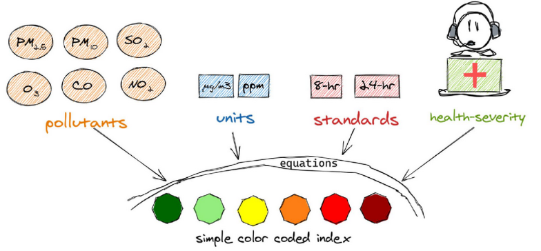
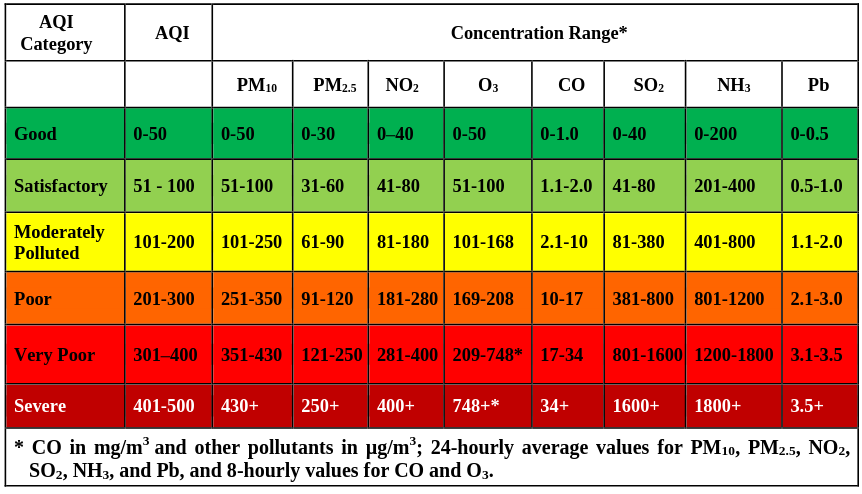
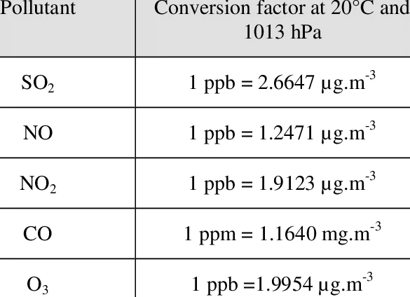
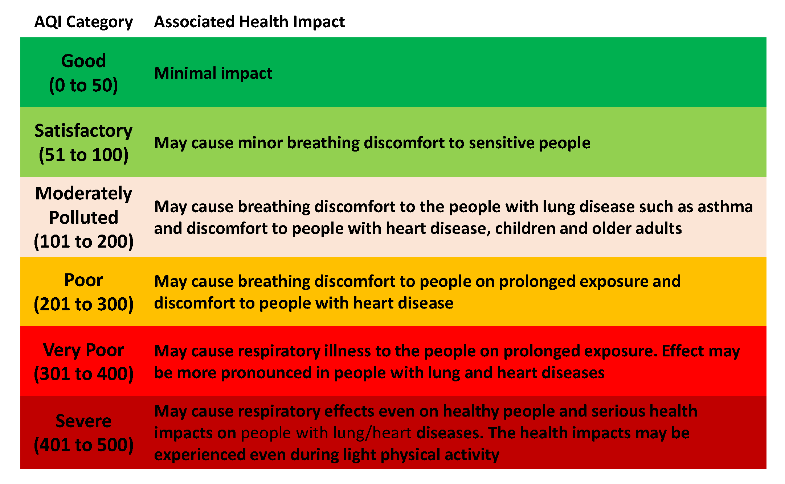

# CPCB AQI Breakpoints: {pollutant: [(BPlow, BPhigh, Ilow, Ihigh), ...]}
# Concentrations are in µg/m³ except CO (mg/m³) and NH3 (µg/m³)
CPCB_BREAKPOINTS = {
"PM2.5": [ # 24-hr avg, µg/m³
(0.0, 30.0, 0, 50),
(30, 60.0, 50, 100),
(60, 90.0, 100, 200),
(90, 120.0, 200, 300),
(120,250.0, 300, 400),
(250,500.0, 400, 500),
],
"PM10": [ # 24-hr avg, µg/m³
(0, 50, 0, 50),
(50, 100, 50, 100),
(100, 250, 100, 200),
(250, 350, 200, 300),
(350, 430, 300, 400),
(430, 600, 400, 500),
],
"NO2": [ # 24-hr avg, µg/m³
(0, 40, 0, 50),
(40, 80, 50, 100),
(80, 180, 100, 200),
(180, 280, 200, 300),
(280, 400, 300, 400),
(400, 800, 400, 500),
],
"O3": [ # 8-hr avg, µg/m³
(0, 50, 0, 50),
(50, 100, 50, 100),
(100, 168, 100, 200),
(168, 208, 200, 300),
(208, 748, 300, 400),
(748,1000, 400, 500),
],
"CO": [ # 8-hr avg, mg/m³
(0.0, 1.0, 0, 50),
(1.0, 2.0, 50, 100),
(2.0, 10.0,100, 200),
(10.0, 17.0,200, 300),
(17.0, 34.0,300, 400),
(34.0, 50.0,400, 500),
],
"SO2": [ # 24-hr avg, µg/m³
(0, 40, 0, 50),
(40, 80, 50, 100),
(80, 380, 100, 200),
(380, 800, 200, 300),
(800,1600, 300, 400),
(1600,2620,400, 500),
],
"NH3": [ # 24-hr avg, µg/m³
(0, 200, 0, 50),
(200, 400, 50, 100),
(400, 800, 100, 200),
(800, 1200, 200, 300),
(1200,1800, 300, 400),
(1800,2400, 400, 500),
],
"Pb": [ # 24-hr avg, µg/m³
(0.0, 0.5, 0, 50),
(0.5, 1.0, 50, 100),
(1.0, 2.0, 100, 200),
(2.0, 3.0, 200, 300),
(3.0, 3.5, 300, 400),
(3.5, 5.0, 400, 500),
],
}2 Calculating Air Quality Index (AQI)
Air Quality Index (AQI) is a unit less number useful for effective communication of air quality status to people.
It unifies all the complicated (a) science of pollution composition, (b) exposure rate based health severity, (c) ambient standards, and (d) measurement and standard protocols, into simple color coded alerts of good or bad or severe air pollution categories.

It is calculated differently in different countries. In this tutorial, we will calculate AQI in the Indian method.
In India, eight pollutants (PM10, PM2.5, NO2, O3, CO, SO2, NH3 and Pb) are generally monitored at each monitoring station. Each pollutant will get a sub-index. The AQI is the worst sub-index of the eight sub-indices calculated. A station may not monitor all the eight pollutants. For AQI to be calculated at a station: 1. A minimum of 3 pollutants should be monitored (with PM2.5 or PM10 being one of them), and 2. Each pollutant should be monitored for a minimum of 16 hours.
For more reading on AQI, refer: 10 Frequently asked questions on AQI
To know more about the pollutants mentioned above, refer: Know Your Pollutants
2.1 Calculating Sub-Index of a pollutant
The sub-index is also a unit less number. The Central Pollution Pollution Board (CPCB) in India mapped pollutant concentration breakpoints to certain air quality categories as follows:

For instance, if the 24-hourly average of PM2.5 is 30 μg/m3, the sub-index of PM2.5 would be 50. if PM2.5 is 121 μg/m3, sub-index would be 301.
To calculate the sub-index for other intermediary values of pollutant concentration, we use linear segmentation.
\[I_p = \frac{I_{Hi} - I_{Lo}}{BP_{Hi} - BP_{Lo}} ~ (C_p - BP_{Lo}) + I_{Lo}\]
- Ip is the sub index for pollutant p
- Cp is the concentration of pollutant p
- BP (Hi and Lo) are the breakpoints greater and lesser than Cp respectively
- I (Hi and Lo) are the AQI values corresponding to BP (Hi and Lo) respectively
We’ll write a pythonic function to calculate sub-index of a pollutant from its concentration value.
def calculate_sub_index(pollutant: str, concentration: float) -> dict:
"""
Calculate the CPCB AQI sub-index for a given pollutant and concentration.
Args:
pollutant : Pollutant name. Supported: PM2.5, PM10, NO2, O3, CO, SO2, NH3, Pb
(case-insensitive)
concentration: Measured concentration value.
Units — µg/m³ for all except CO; mg/m³ for CO
Returns:
A dict with keys:
pollutant : Normalised pollutant name
concentration : Input concentration
sub_index : Computed AQI sub-index (int), or None if out of range
Formula (linear interpolation per CPCB):
Ip = [(IHi - ILo) / (BPHi - BPLo)] * (Cp - BPLo) + ILo
"""
result = {
"pollutant": pollutant,
"concentration": concentration,
"sub_index": None,
"error": None,
}
# Normalise pollutant name
normalised = pollutant.strip().upper().replace(".", "")
name_map = {p.upper().replace(".", ""): p for p in CPCB_BREAKPOINTS}
if normalised not in name_map:
result["error"] = (
f"Unknown pollutant '{pollutant}'. "
f"Supported: {', '.join(CPCB_BREAKPOINTS.keys())}"
)
return result
pollutant_key = name_map[normalised]
result["pollutant"] = pollutant_key
breakpoints = CPCB_BREAKPOINTS[pollutant_key]
if concentration < 0:
result["error"] = "Concentration cannot be negative."
return result
# Find the matching breakpoint segment
for bp_lo, bp_hi, i_lo, i_hi in breakpoints:
if bp_lo <= concentration <= bp_hi:
# CPCB linear interpolation formula
sub_index = ((i_hi - i_lo) / (bp_hi - bp_lo)) * (concentration - bp_lo) + i_lo
sub_index = round(sub_index)
result["sub_index"] = sub_index
elif concentration > bp_hi:
sub_index = 500
result["sub_index"] = sub_index
return resultcalculate_sub_index('pm2.5', 35){'pollutant': 'PM2.5', 'concentration': 35, 'sub_index': 58, 'error': None}2.1.1 Exercise: Calculating Sub-Indices of various pollutants from real data of a monitoring station
For the purposes of this tutorial, we’ll use concentration data of from a single monitor in Delhi. This data can be downloaded from openaq. We’ll calculate sub-indices of all pollutants for a day.
import pandas as pd
pollutant_conc = pd.read_csv('data/openaq_location_6358_measurments.csv')
pollutant_conc['datetimeLocal'] = pd.to_datetime(pollutant_conc['datetimeLocal']) #Convert to datetime format
pollutant_conc.head(5)| location_id | location_name | parameter | value | unit | datetimeUtc | datetimeLocal | timezone | latitude | longitude | country_iso | isMobile | isMonitor | owner_name | provider | |
|---|---|---|---|---|---|---|---|---|---|---|---|---|---|---|---|
| 0 | 6358 | Mandir Marg, New Delhi - DPCC | co | 2.24 | ppb | 2026-03-01T00:15:00Z | 2026-03-01 05:45:00+05:30 | Asia/Kolkata | 28.636429 | 77.201067 | NaN | NaN | NaN | Delhi Pollution Control Committee | CPCB |
| 1 | 6358 | Mandir Marg, New Delhi - DPCC | co | 2.22 | ppb | 2026-03-01T00:30:00Z | 2026-03-01 06:00:00+05:30 | Asia/Kolkata | 28.636429 | 77.201067 | NaN | NaN | NaN | Delhi Pollution Control Committee | CPCB |
| 2 | 6358 | Mandir Marg, New Delhi - DPCC | co | 2.22 | ppb | 2026-03-01T00:45:00Z | 2026-03-01 06:15:00+05:30 | Asia/Kolkata | 28.636429 | 77.201067 | NaN | NaN | NaN | Delhi Pollution Control Committee | CPCB |
| 3 | 6358 | Mandir Marg, New Delhi - DPCC | co | 2.19 | ppb | 2026-03-01T01:00:00Z | 2026-03-01 06:30:00+05:30 | Asia/Kolkata | 28.636429 | 77.201067 | NaN | NaN | NaN | Delhi Pollution Control Committee | CPCB |
| 4 | 6358 | Mandir Marg, New Delhi - DPCC | co | 2.16 | ppb | 2026-03-01T01:15:00Z | 2026-03-01 06:45:00+05:30 | Asia/Kolkata | 28.636429 | 77.201067 | NaN | NaN | NaN | Delhi Pollution Control Committee | CPCB |
Data is available at 15 minute frequency. We learnt that sub-indices require 24-hourly average (8-hourly for O3 and CO). Hence, to calculate the sub-index at 6AM on March 2nd, we’d need average of the previous 24 hours.
start = pd.Timestamp('2026-03-01 06:00:00', tz='Asia/Kolkata')
end = pd.Timestamp('2026-03-02 06:00:00', tz='Asia/Kolkata')
pollutant_conc_24h = pollutant_conc[pollutant_conc['datetimeLocal'].between(start, end)]Now we have data of 24 hours before March 2nd 6AM. Before we calculate 24-hourly averages, we have to ensure if we have atleast 16 hours of data for each pollutant to calculate the sub-index.
pollutant_conc_24h.groupby('parameter').value.count()/4parameter
co 20.75
no 20.75
no2 20.75
nox 20.75
o3 21.25
pm10 21.50
pm25 16.00
so2 20.75
Name: value, dtype: float64We have atleast 16 hours of data for each pollutant. We can see that NH3, PB are not monitored at this station. The units of pollutant concentration are also different:
aqi_monitoring_pollutants = ['pm10', 'pm25', 'no2', 'o3', 'co', 'so2', 'nh3', 'pb']
pollutant_conc_24h = pollutant_conc_24h[pollutant_conc_24h.parameter.isin(aqi_monitoring_pollutants)]
pollutant_conc_24h.groupby('parameter').unit.unique()parameter
co [ppb]
no2 [ppb]
o3 [µg/m³]
pm10 [µg/m³]
pm25 [µg/m³]
so2 [ppb]
Name: unit, dtype: objectWe’ll take help of the following table to convert all pollutant concentrations to µg/m3

pollutant_conc_24h_pivoted = pollutant_conc_24h.pivot_table('value','datetimeLocal','parameter')
pollutant_conc_24h_pivoted['so2'] = pollutant_conc_24h_pivoted['so2']*2.66
pollutant_conc_24h_pivoted['no2'] = pollutant_conc_24h_pivoted['no2']*1.91
pollutant_conc_24h_pivoted['co'] = pollutant_conc_24h_pivoted['co']*1.16 #CO units should be in mg/m3pollutant_conc_24h_pivoted| parameter | co | no2 | o3 | pm10 | pm25 | so2 |
|---|---|---|---|---|---|---|
| datetimeLocal | ||||||
| 2026-03-01 06:00:00+05:30 | 2.5752 | 119.184 | 5.3 | 204.0 | 39.0 | 39.102 |
| 2026-03-01 06:15:00+05:30 | 2.5752 | 122.049 | 6.9 | 204.0 | 39.0 | 41.230 |
| 2026-03-01 06:30:00+05:30 | 2.5404 | 122.049 | 7.8 | 204.0 | 39.0 | 39.634 |
| 2026-03-01 06:45:00+05:30 | 2.5056 | 115.173 | 5.9 | 204.0 | 39.0 | 40.432 |
| 2026-03-01 07:00:00+05:30 | 2.4824 | 109.443 | 6.7 | 162.0 | 35.0 | 38.304 |
| ... | ... | ... | ... | ... | ... | ... |
| 2026-03-02 05:00:00+05:30 | 1.8560 | 86.905 | 7.8 | 167.0 | 41.0 | 38.304 |
| 2026-03-02 05:15:00+05:30 | 1.8676 | 87.287 | 9.8 | 167.0 | 41.0 | 34.048 |
| 2026-03-02 05:30:00+05:30 | 1.8328 | 87.287 | 9.8 | 167.0 | 41.0 | 34.846 |
| 2026-03-02 05:45:00+05:30 | 1.7632 | 86.523 | 10.0 | 167.0 | 41.0 | 39.634 |
| 2026-03-02 06:00:00+05:30 | 1.7632 | 85.759 | 11.2 | 158.0 | 29.0 | 42.560 |
86 rows × 6 columns
For all pollutants except CO and O3, we can now simply calculate a 24 hour average.
average = pollutant_conc_24h_pivoted[['no2','so2','pm25','pm10']].mean()
averageparameter
no2 82.104687
so2 46.360916
pm25 26.765625
pm10 168.837209
dtype: float64For O3 and CO, 8-hourly average is required. Since there can be multiple 8 hour windows over a day, we consider the maximum of rolling 8 hour averages.
o3_co_avg = pollutant_conc_24h_pivoted[['o3','co']].rolling('8h',
min_periods=24 #Minimum of 6hours data to calculate 8 hour average (
).mean().max()
o3_co_avgparameter
o3 75.986667
co 2.426817
dtype: float64average_df_final = pd.DataFrame(pd.concat([average,o3_co_avg])).reset_index()
average_df_final.columns = ['pollutant','average']
average_df_final| pollutant | average | |
|---|---|---|
| 0 | no2 | 82.104687 |
| 1 | so2 | 46.360916 |
| 2 | pm25 | 26.765625 |
| 3 | pm10 | 168.837209 |
| 4 | o3 | 75.986667 |
| 5 | co | 2.426817 |
Now we will use the function we created to calculate the sub-index of each pollutant. We will apply calculate_sub_index function on each row in the above daily average concentrations.
average_df_final['sub-index'] = average_df_final.apply(lambda x: calculate_sub_index(x['pollutant'], x['average'])['sub_index'], axis=1)
average_df_final| pollutant | average | sub-index | |
|---|---|---|---|
| 0 | no2 | 82.104687 | 102 |
| 1 | so2 | 46.360916 | 58 |
| 2 | pm25 | 26.765625 | 45 |
| 3 | pm10 | 168.837209 | 146 |
| 4 | o3 | 75.986667 | 76 |
| 5 | co | 2.426817 | 105 |
The final AQI at this monitoring station is the maximum of all the sub-indices. And the pollutant that has the maximum sub-index is the prominent pollutant driving the AQI.
AQI = average_df_final['sub-index'].max()
prominent_pollutant = average_df_final.loc[average_df_final['sub-index'].idxmax(), 'pollutant'].upper()
print(f'The AQI at Mandir Marg, New Delhi on March 2nd 6AM is: {AQI}. \n The prominent pollutant is {prominent_pollutant}')The AQI at Mandir Marg, New Delhi on March 2nd 6AM is: 146.
The prominent pollutant is PM10
2.2 Summary
We thus learnt how to calculate AQI at a station at a particular instance of time, using the 24 hour average concentrations of each pollutant. The real-time AQI that we see on portals like CPCB - NAQI perform the same operation for every station, every hour.